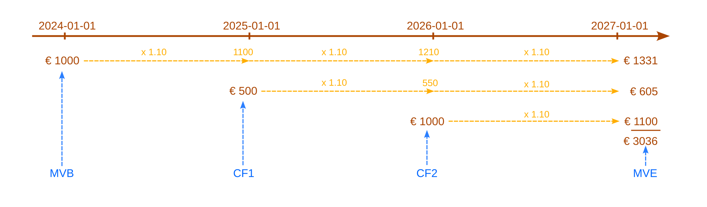
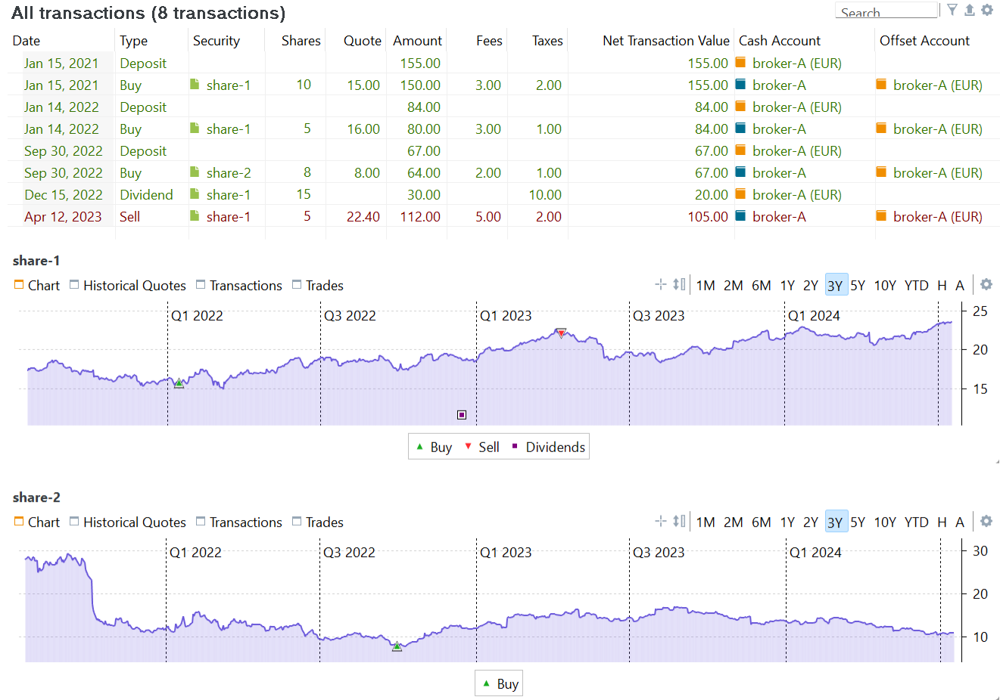
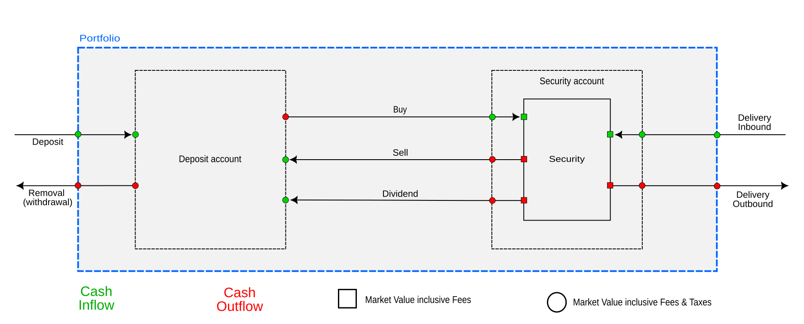
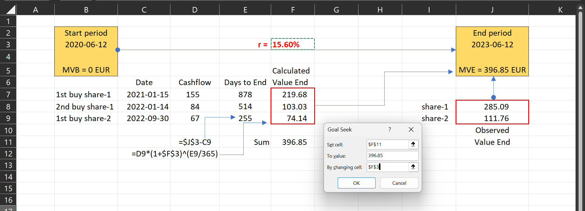
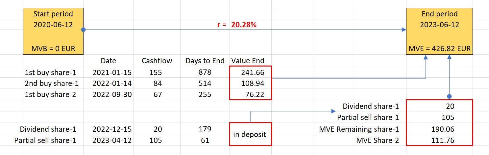
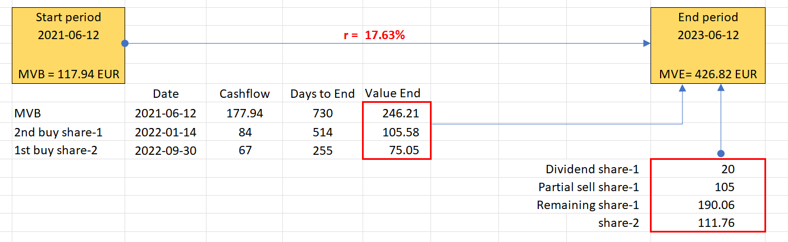
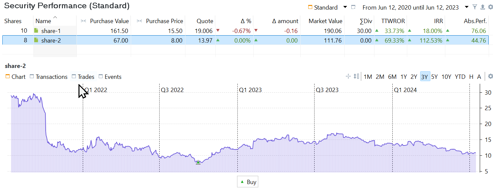
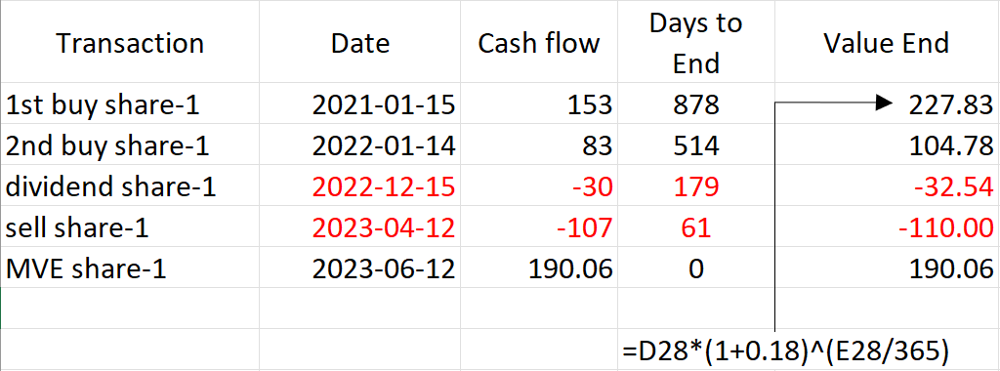
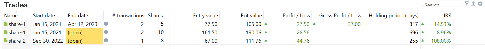

资金加权收益率
资金加权收益率与项目管理中常用的内部收益率 (IRR) 技术完全相同。该计算同时考虑报告期内现金流的时点（何时）与规模（多少）。现金流是指流入或流出投资组合的任何一笔金额。IRR 计算的基础公式为：
$$\mathrm{MVB \times (1 + IRR)^{\frac{RD}{365}} + \sum_{t=1} ^{n}CF_t \times (1+IRR)^{\frac{RD_t}{365}} = MVE \qquad \text{(Eq 1)}}$$
其中 n = 报告期内现金流的笔数，CFt = 时点 t 的现金流，RDt = CFt 之后至期末所剩的天数。对 MVB 而言，RD 等于整个期间的长度（以天计）。若要求年化收益率，需将剩余天数除以 365。若要计算整个期间（例如 2 年）的期间收益率，则应除以整个期间的天数，例如 730 天。
公式 1 与未来值的计算非常相似。在图 1 中，假设你的投资年利率为 10%，初始本金 1000 EUR 在三年后会增长到未来值 1331 EUR。其后两年再分别投入 500 EUR 与 1000 EUR，届时将分别变为 605 EUR 与 1100 EUR。三年后，该投资的总未来值为 3036 EUR。

计算 IRR 是计算投资未来值 (FV) 的逆运算。你并不知道利率或 IRR，但你知道期初市值、期末市值，以及期间陆续发生的各笔现金流。依公式：
1000 * (1 + IRR)^(3x365/365) + 500 * (1 + IRR)^(2x365/365) + 1000 * (1 + IRR)^(365/365) = 3036
自此以后，公式均以电子表格风格书写：用星号 (*) 表示乘法，用插入符 (^) 表示乘方。这样写出的公式更简洁，也便于直接复制粘贴到电子表格中验证。
因此，500 * (1 + IRR)^(2x365/365) 表示时点 2025-01-01 的一笔 500 EUR 现金流，在年利率 = IRR 的条件下，到期末（即 2*365 天之后）所形成的预期未来值。请注意：在没有任何现金流的情况下，公式 1 与（年化的）简单收益率公式 MVE = MVB x (1 + r) 等价。
IRR 是这样一个年利率：把投资的期初价值（MVB）及其后所有现金流按各自期限以该利率增长，其结果须等于期末价值（MVE）。换句话说，投资组合的 IRR 就是它必须按多少年利率增长（或收缩）才能得到期末价值。
遗憾的是，没有简便的方法从公式 1 中解出 IRR 的值。Excel 等软件工具提供 IRR、XIRR 之类的函数，它们采用试算法：用不同的 IRR「猜测值」反复代入公式求解，直到找到合适的匹配结果。在下面的示例中，我们将用 Excel 的单变量求解来说明求解过程。
定义现金流
现金流的概念看似浅显：它指流入或流出一个系统的现金。不过，我们以 demo-portfolio-03 为例来看（见图 2）。

该投资组合有一个现金账户 broker-A (EUR) 和一个证券账户 broker-A，后者持有两项证券 share-1 与 share-2。只发生了四种账目类型：存款、买入、股息和卖出。问题是，在这一情境下，公式 1 中相关的现金流究竟有哪些？例如，一笔存款账目会把资金转入投资组合以及现金账户。而一笔卖出账目会把资金从某项证券与证券账户中取出并转入现金账户，但它并不影响投资组合。
在定义相关现金流之前，必须先确定绩效计算需要在哪个层面进行。你需要计算的是整个投资组合的绩效（以及针对哪个期间）、某个特定账户或证券的绩效，还是某一笔头寸的绩效？
从投资组合的角度看，只有当现金或证券进入或离开投资组合时才产生现金流。相关的账目类型只有四种：存款、取款、证券转入 和 证券转出（参见图 3 的左右两侧）。买入、卖出和股息账目都不会产生投资组合层面的现金流。资金既未进入也未离开投资组合，只是在投资组合内部的账户之间划转。
从证券或证券账户的角度看，只有五种账目是相关的：买入、卖出、股息，以及 证券转入 和 证券转出。这些账目会使资金流入或流出该证券（账户）。有些人可能难以接受"股息不是投资组合现金流"这一点。看上去似乎是资金像存款一样从外部来源进入了投资组合。然而，股息是公司作为利润分配支付给股东的。你作为股东，实质上是部分所有者，因此这份股息是这些股票自己付给你的。
从图 3 可以看出，流入或流出一项证券的现金流，与进入或离开证券账户或投资组合的现金流，表示方式不同（方块与圆形之别）。以 share-1 的第一笔买入账目为例。从现金账户流出的金额显然是 155 EUR。这笔金额用于买入本金（150 EUR）、费用（3 EUR）和税款（2 EUR）。那么，流入该证券（账户）的金额是多少呢？有四种可能：
- 含费用与税款（155 EUR）：这个金额正是我们实际为
share-1付出的代价。但是，即便股价略有上涨，期末市值很可能仍低于期初市值，结果是负的绩效 - 仅含费用（153 EUR）：不应把我们支付的 2 EUR 税款计入其中。税款的征收方式在各国差异很大，也不由我们控制。有些国家在买入时征税（如本例），有些一部分在买入时、一部分在以后征收，还有些在卖出时才征收。因此，把税款排除在绩效计算之外也说得通。
- 仅含税款（152 EUR）：不计费用，只计税款。费用虽然同样有很大差异，但它与买入的关系比税款更为内在，因为费用应当反映券商执行这笔账目的实际成本。计税款而不计费用多少有些自相矛盾。
- 不含费用与税款（150 EUR）：这是这 10 份股票在买入时的价值。今后该证券（账户）更值钱或不值钱时，就与这个数字相比。按这种看法，绩效计算中不应计入费用与税款。
事实证明，Portfolio Performance 取的是折中立场。计算整个投资组合的绩效时，费用与税款都计入（例如 155 EUR）；而在证券与证券账户层面，只计费用，不计税款。

投资组合层面的 IRR
以下示例将计算整个投资组合的 IRR。你可以在 视图 > 报告 > 收益 仪表板中找到这一绩效指标。所得的 IRR 不能外推到单个账户或单项证券，它反映的是整个投资组合的绩效。要计算特定证券或头寸的 IRR，请参见后续章节。所有示例均基于 demo-portfolio-03。
示例 1：一笔存款 + 一笔买入账目
假设在 demo-portfolio-03 中，只有 2021 年 1 月 15 日的第一笔存款账目发生。对于三年报告期（2020-06-12 2023-06-12），投资组合的期初市值为零。2020 年 6 月 12 日时投资组合确实是空的。2021 年 1 月 15 日，现金账户余额增加到 155 EUR，并一直保持到 2023 年 6 月 12 日。因此投资组合的期末市值也是 155 EUR。依公式 1，IRR 可由下式得出：
MVB*(1+IRR)^(RD/365) + CF1*(1+IRR)^(RD1/365) = MVE
↓ ↓ ↓
0*(1+0)^(1095/365) + 155*(1+0)^(878/365) = 155
显然 IRR=0 就能满足该公式，因为 (1+0) 的任意次幂都等于 1。因此，即使有多笔存款，现金账户乃至投资组合的绩效仍为零。原因在于，存款同时增加现金账户余额与投资组合的期末市值，使公式 1 在 IRR = 0 时依然保持平衡。
Portfolio Performance 对这类现金流或转账有专门的术语：绩效中性转账；例如可参见绩效计算组件。存款之所以是「绩效中性」的，是因为这笔资金划转对期末市值和账户的影响金额相同。现金账户不产生利息，也不发生成本。所存入的金额在期末之前会原封不动地留在账户中，对绩效（例如 IRR）的影响为零。
如果再加入一笔买入账目（与图 2 中的第二笔账目类似），结果会怎样？会产生两方面的影响：
- 现金账户减少 155 EUR，余额归零，第一笔账目的效果被抵消。
share-1的份额数增加 10 份，其买入时的价值为 150 EUR。其余 5 EUR 支付了费用（3 EUR）与税款（2 EUR）。
由于我们仍然是在计算投资组合的绩效，上面的公式依然成立。唯一的区别是，期末 share-1 的报价为每股 19.006 EUR，因此投资组合的期末市值为 190.06 EUR。
IRR = 8.85% 可解出该公式。要得到 190.06 EUR 的期末市值，初始现金流 CF1（155 EUR）须按年利率 8.85% 增长 2.41 年，即 878 个剩余天数。
示例 2：多笔买入账目
当涉及多笔现金流时，求解内部收益率 (IRR) 就复杂得多。例如图 1 中的三笔买入账目。此前提到的逻辑同样适用。
- 2020-06-12 时 MVB 仍为零。期间长度为三年，即 1095 天。
- 共六笔账目：3 笔存款与 3 笔买入（见图 2），因而在多个组成部分上产生多笔现金流。
- 投资组合层面的现金流依次为：155、84、67 EUR（含费用与税款）。
- 这三笔现金流在报告期内的剩余天数依次为 878、514、255 天。
- MVE = 15 份按报价 19.006 EUR 计，加上 5 份按 13.77 EUR 计，合计 396.85 EUR。现金账户已清空。
IRR = 15.60% 可解出该公式。
MVB CF1 CF2 CF3 MVE
↓ ↓ ↓ ↓ ↓
0 + 155*(1+IRR)^(878/365) + 84*(1+IRR)^(514/365) + 67*(1+IRR)^(255/365) = 396.85`
图 5 展示了在 Excel 中的计算过程（下载工作簿）。若持有期为 878 天、年利率为 15.60%，初始现金流 155 EUR 将增长到 219.68 EUR。第二笔买入则从 84 EUR 增长到 103.03 EUR。share-2 的收益显得较小，是因为其持有天数更少。可以使用 Excel 的 数据 > 单变量求解 来模拟 IRR 的计算（见图 4）。该方法的做法是：反复改变 IRR 的值（单元格 F3），使计算出的 MVE（单元格 F11）等于观测到的 MVE（手动输入值），直至找到匹配值（15.60%）。
请注意，各份额单独计算出的期末值未必与实际观测到的期末值一致。比如比较一下 share-2 的预期值与观测值，观测值（单元格 J9）要高得多。只有整个投资组合的总和能够对上，且同一个算出的 IRR 被应用到所有份额上。当然，Portfolio Performance 也能针对单项证券计算 IRR；如何计算单项证券与头寸的绩效，见下文。

示例 3：买入—股息—卖出账目
在 PP 中，卖出账目所得的现金会存入现金账户。因此，卖出账目正好与买入账目相反：证券（账户）减少，而关联的现金账户按相同金额增加。两笔现金流相互抵消。
派发股息时，关联的现金账户也会按股息金额增加。不过，这笔钱的来源可能并不清楚。它看似来自外部来源，但 Portfolio Performance 把它视为由该证券自身产生。没有这项证券，也就没有股息。公司向股东派发股息，实质上意味着你作为股东/所有者，是从公司的收入或利润中给自己派发股息。其结果是，公司的价值以及你所持份额的价值相应下降。
不过，从计算投资组合绩效的角度看，这些细节并不重要。由于没有任何资金离开或进入投资组合，绩效公式与示例 2 相同，只是 MVE = 426.82 EUR，其中已包含卖出与股息支付的结果。
MVB CF1 CF2 CF3 MVE
↓ ↓ ↓ ↓ ↓
0 + 155*(1+0.2028)^(878/365) + 84*(1+0.2028)^(514/365) + 67*(1+0.2028)^(255/365) = 426.82`

然而，如果股息或卖出所得被「花掉」（比如你用它给自己买了杯咖啡），从而形成一笔外部现金流（取款），就应当在 PP 中记录这笔账目。同样，如果你选择把股息或卖出所得再投资，也需要在 PP 中记录一笔新账目。
示例 4：MVB > 0
在前面的示例中，所有账目都发生在报告期内。但情况并非总是如此。区分以下几种情形非常重要：
-
CFt 发生在报告期开始（MVB 日期）之前。Portfolio Performance 将使用时点 t 的历史报价来计算 CFt 的价值。此时用的是投资在时点 t 的市值，而非成本。持有期为整个报告期。
-
CFt 发生在报告期开始之后、结束之前。CFt 的价值由账目数据确定。持有期为从时点 t 到报告期结束所剩的天数。
-
CFt 落在报告期结束之后。CFt 不计入 MVE，也不纳入该报告期的 IRR 计算。
设想持有期只有 两 年（从 2021-06-12 到 2023-06-12），即 730 天。由于 share-1 的第一笔买入发生在该期间之外（属于上述第 1 种情形），因此这里使用的是 share-1 在期初的报价，而不是实际买入价。
- MVB = 177.94 EUR，对应 10 份
share-1按 2021 年 6 月 11 日的收盘价 17.794 EUR 计（即期间开始前一日的收盘价）。 - 另有两笔买入：均在报告期内，剩余天数分别为 514 天与 255 天，买入价格已知。
- 股息与卖出在 MVE 中按期末日期估值，在本计算中不计为现金流。
- MVE = 426.82 EUR，其中包含现金账户中来自股息与卖出的 125 EUR。
由此得到的公式为（IRR = 17.63%）：
MVB CF2 CF3 MVE
↓ ↓ ↓ ↓
177.94 x (1+IRR)^(730/365) + 84*(1+IRR)^(514/365) + 67*(1+IRR)^(255/365) = 426.82`

证券层面的 IRR
在投资组合层面算出的 IRR，几乎说明不了某一项特定证券的绩效。例如，demo-portfolio-03 的 IRR（3 年报告期）为 20.28%（见图 5），而 share-2 的证券 IRR 为 112.53%（见图 7 上部）。看一眼图 7（下部）就能明白原因：该项证券是在整个期间内价格最低时买入的。你可以用菜单 视图 > 报告 > 证券 分别取得每项证券的 IRR（见图 7）。

计算单一项证券的绩效时，需要考虑的账目是买入、卖出与股息（见图 3）。本例中没有涉及任何证券转入或转出。请注意，从单一项证券的角度来看：
- 买入：从现金账户产生一笔现金流出，并向该证券产生一笔现金流入。
- 卖出：从该证券产生一笔现金流出，并向现金账户产生一笔现金流入。
- 股息：从该证券产生一笔现金流出，并向现金账户产生一笔现金流入。
Important
-
流入与流出一项证券的现金流始终包含费用。费用被视为该证券内在的组成部分，证券的绩效部分取决于费用的高低。
-
计算证券 IRR 时不计税款。这样处理是有道理的：税款与某一项具体证券并无直接关联，它由政府征收（有时还会延迟征收），且不在投资者的控制范围之内。费用尚可在一定程度上加以影响，税款则不能。因此，计算证券 IRR 时应采用的现金流，是该笔账目的借记金额减去税款。
-
与投资组合 IRR 不同，股息、买入与卖出账目都被视为现金流。这些账目的资金会「进入」或「离开」该证券，且发生在账目日期。以（有利或不利的时点）买卖证券以及派发股息，都会影响该证券的绩效。其副作用是，现金账户不计入证券 IRR 的计算。
-
对于存在多笔账目的证券，买价与成本较难确定。例如，
share-1剩余的 10 份是两笔买入与一笔卖出共同的结果。按照先进先出原则，这 10 份由第一次买入后剩下的 5 份与第二次买入的 5 份组成，由此得出平均价格 15.50 EUR（见示例 6）。
示例 5：只有一笔买入账目的证券
share-2 的 IRR 计算是一个直观的例子。这唯一的一笔买入账目落在每一个持有期（1 年、2 年或 3 年）之内。该笔账目的现金流总额为 66 EUR（含费用，不含税款）。
- MVB = 0 EUR。
- 第一笔也是唯一一笔现金流：8 份 × 8 EUR/份 + 2 EUR 费用。3 年期间截至
2023-06-12，剩余天数 = 255。 - MVE = 111.76 EUR，即 8 份 × 13.97 EUR/份。
把这些值代入公式 1，可得解 IRR = 112.53%；另见图 8。
示例 6：存在多笔账目的证券
如图 2 所示，share-1 存在多笔账目：2 次买入、部分卖出和股息。务必把日期和现金流弄清楚，见图 9。

第一笔和第二笔现金流相当直观：10 份 × 15 EUR/份 + 3 EUR 费用，以及 5 份 × 16 EUR/份 + 3 EUR 费用。假设 IRR = 18%（见图 7），share-1 计算出的期末值为 153 x 1.18^(878/365) = 227.81 EUR。
请注意，股息支付与卖出是按账目日期记为现金流的。这与投资组合层面 IRR 计算中的处理方式不同。
把这些值代入公式 2 得：
MVB CF1 (buy) CF2 (buy) CF3 (dividend) (sell) MVE
↓ ↓ ↓ ↓ ↓ ↓
0 + 153 x (1+IRR)^(878/365) + 83 x (1+IRR)^(514/365) - 30 x (1+IRR)^(179/365) - 107 x (1 + IRR)^(61/365) = 190.06`
如图 8 所示，IRR = 18.00% 可以满足该公式。
头寸层面的 IRR
一笔头寸由与某项特定证券相关的全部买入与卖出账目汇集而成。头寸可分为「已结」与「未结」两种。已结头寸意味着该头寸内不会再有后续账目，未结头寸则意味着还可能发生更多账目。demo-project-03 包含 3 笔头寸（见 报告 > 收益 > 头寸；图 9）。一笔已结头寸始于 2021-01-15 买入 share-1，止于 2022-01-14 的部分卖出。剩余份额开启第二笔未结头寸，始于 2022-01-14，止于当前日期（例如 2023-06-12）。第三笔头寸也未结，因为 share-2 尚未卖出。
Important
- 头寸的绩效计算始终包含费用与税款。
- 与投资组合层面和证券层面的 IRR 计算不同，此处不能设置报告期。已结头寸有固定的开始与结束日期；所有未结头寸的结束日期均设为今天。
- Portfolio Performance 遵循先进先出原则来判断卖出的是哪些份额。2023-04-12 卖出的 5 份对应的是 2021-01-15 取得的那部分，而不是 2022-01-14 取得的那部分。

示例 7：已结头寸的 IRR 计算
2023 年 4 月 12 日卖出了 5 份 share-1。当天的历史收盘价为每股 22.40 EUR。费用与税款合计 7 EUR，得出净额 105 EUR（见图 1），即图 10 中的离场价格。
由于遵循先进先出原则，这 5 份来自第一次买入，其买入成本为 5 x 15 EUR = 75 EUR。费用与税款（10 份共 5 EUR）按比例分摊，本例中为 5/2 = 2.5 EUR。因此这笔已结头寸的入场价格为 77.50 EUR。证券的持有期为 817 天（自 2021-01-15 至 2023-04-12）。卖出账目与 MVE 相对应。此时可以使用简化公式（不含任何账目）。IRR = 14.53% 可解出该公式。
示例 8：未结头寸的 IRR 计算
Important
Portfolio Performance 计算未结头寸的 IRR 时始终使用当前日期。若想沿用上一个示例的情形，可以试着更改计算机的系统日期。无需重启 Portfolio Performance。
假设今天是 2023-06-12。涉及 share-2 的未结头寸相当简单。如图 2 所示，这批份额于 2022-09-30 取得，净值为 64 EUR，另加 3 EUR 费用与税款；若今天是 2023 年 6 月 12 日，那已是 255 天之前。当前价值为 111.76 EUR，于是 67 * (1 + IRR)^255/365 = 111.7，即 IRR = 108%。
涉及 share-1 的未结头寸则是一个特殊情况。由于它是未结头寸，其结束日期为当天（2023-06-12）。从买入日期到今天共 696 天。该日的历史价格为每股 19.006 EUR，因此离场价格为 190.06 EUR。
这笔头寸由 2021 年与 2022 年买入的份额组成。其中 5 份来自 2021 年，现金流为 77.5 EUR（另见上文）。今天它们的估值为 95.03 EUR。另外 5 份来自 2022-01-04，现金流为 5 x 16 EUR/份 + 4 EUR 费用与税款（见图 1）。这 5 份今天（2023-06-12）同样值 95.03 EUR。
这与 Portfolio Performance 的结果一致（见上文图 9）：离场价格为 190.06 = 2 x 95.03 EUR，入场价格为 77.5 + 84 = 161.50 EUR。把这些值代入公式 1，可得解 IRR=9.16%：
77.5*(1+IRR)^(878/365) + 84*(1+IRR)^(514/365) = 190.06